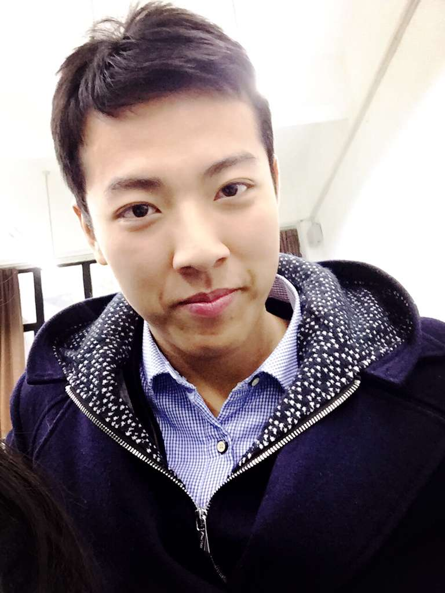

从代码到实物
人员分组：刘佐政 邱元森 樊雨珂
刘佐政 ：技术宅，学霸君，初入王者坑，高调找女票
邱元森 ：低调的享受生活，静静的做一个美男子
樊雨珂 ：萌妹子一枚，手工炒鸡棒，心灵手巧
项目
一.Github以及3D打印机的使用。下面请欣赏我们的“旷世奇作”。
喜欢的小伙伴们可以去二十一栋科创室亲自体验！！
二.激光雕刻机的使用
不要以为这就结束了！！！感觉好玩的同学们可以给宿舍制作一个精美的名牌。
三.Arduino IDE的使用及其延伸

四.PCB的制作
对于PCB，相信大多数人对此还是十分陌生的。但是，他是非常有用也是很好玩的。在这里给大家推荐几款实用的PCB制作软件，希望大家可以多动手来试一下。
实用的软件：eagle（完全免费的哦），Altium Designer（功能强大，但不免费）。
Maker Faire 制汇节
12月的2号，我们加入了maker fair制汇节。下面，让我们一起领略一下。
高端大气的Logo（表示服气）！！！
△感觉自己瞬间聪明了好几亿倍。
然而，这些仅仅只是冰山一角。没有看够的小伙伴们只能等明年了（好气啊）。当然喜欢的小伙伴们，也可已关注一下maker faire的微信。
成果展示
我们的海报
星斗流水灯
我们用Arduino板进行控制，当灯泡与星斗结合起来，在夜晚呈现出极具美感的效果。
网站二维码

学习感言
在这门课上接触了许多高大上的软件，如fusion 360、Arduino等，也是第一次接触全英文软件，一开始感到有些困难，但深入了解后却发现他们十分有趣。
我们大致掌握了3D打印机和激光雕刻机的用法，并成功的用他们做出了几个不成熟却有意思的作品，感到十分快乐。
学到了一种十分方便且比C语言更加易用的编程语言—Python，会给以后的学习生活带去极大便利和另一种解决方案，之后我们也会继续学习这一语言。
最大的收获就是这门课极大的增加了我们对创客、创造的了解和兴趣，凭借自己的知识和先进的技术手段能够将自己所想变为现实，真正的体现了from codes to things。总之，这门课为我们打开了一扇大门，我们也会坚定的继续走下去。